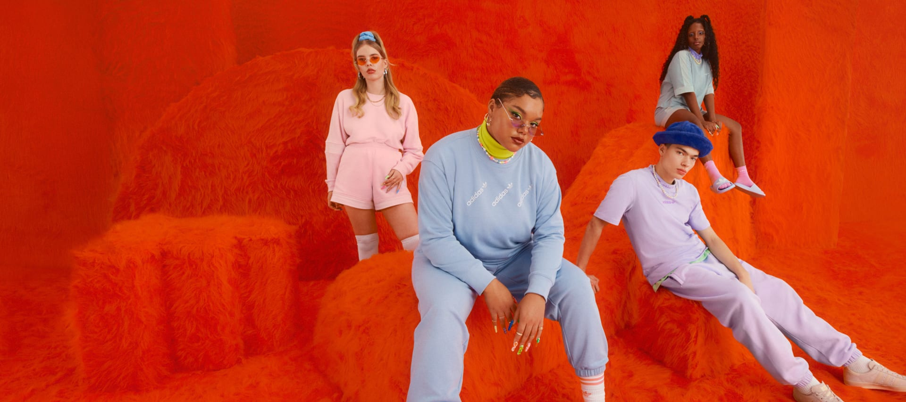
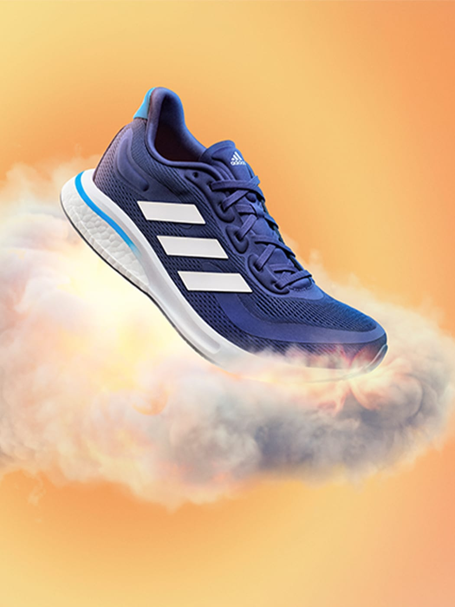
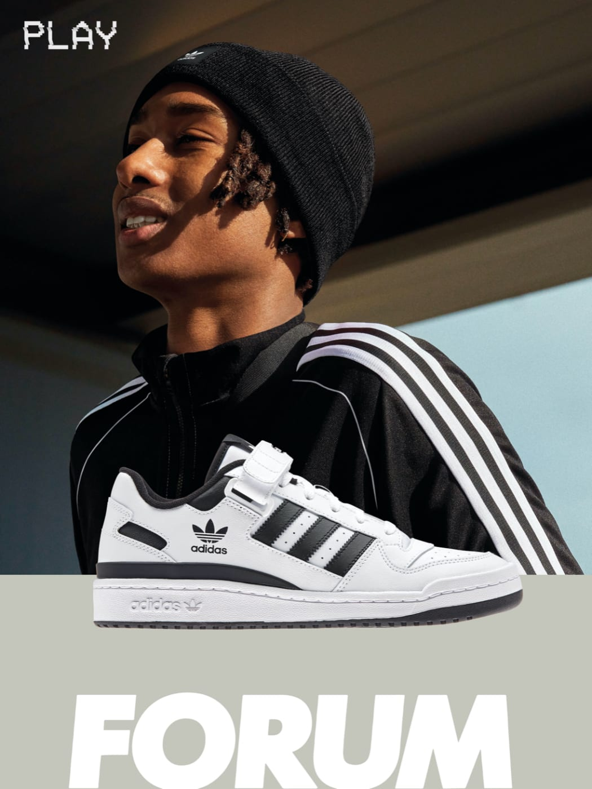
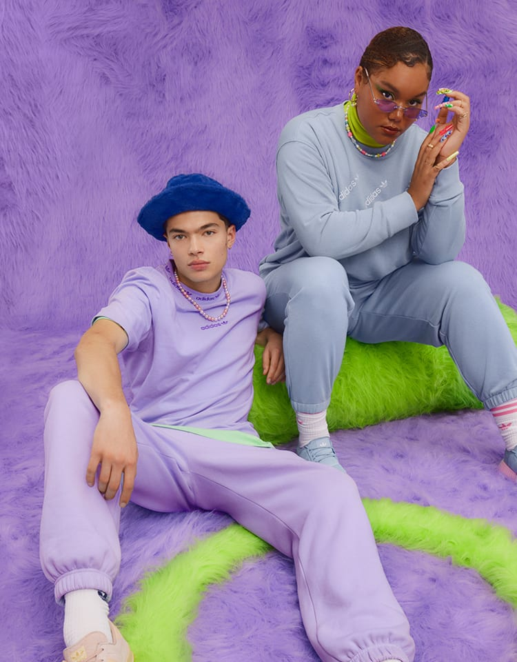
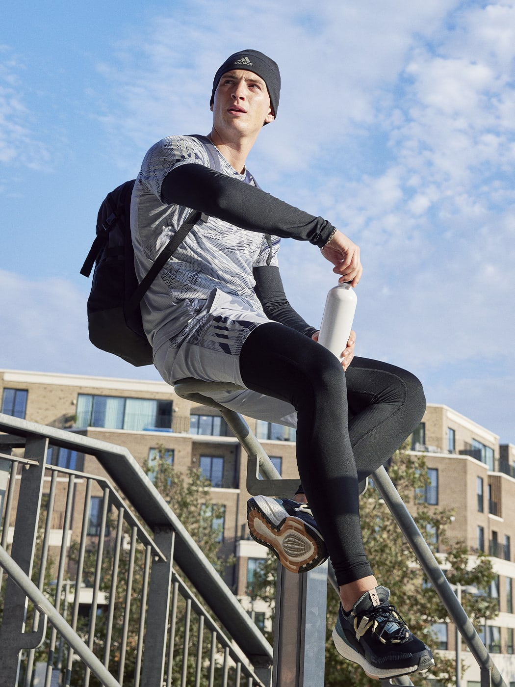

Mais desempenho e conforto na tua próxima aula de ciclismo.
compre agora
Mais desempenho e conforto na tua próxima aula de ciclismo.
compre agora
Mais desempenho e conforto na tua próxima aula de ciclismo.
compre agoraO desporto mantém-nos em forma. Mantém-nos alerta. Une-nos. Através do desporto temos o poder de mudar vidas. Contando histórias de atletas inspiracionais. Ajudando-te a levantar e a continuar. Os nossos artigos desportivos incluem as mais recentes tecnologias, à altura do teu desempenho. Supera a tua marca pessoal. A adidas é a casa do corredor, do jogador de basquetebol, do futuro futebolista e do amante do fitness. A quem quer fugir do caos da cidade e faz caminhadas na montanha. Ao professor de ioga que ensina novas posturas. As três riscas estão na música. No palco dos festivais. As nossas roupas fitness ajudam-te a manter a concentração antes da competição. Durante a corrida. E nas metas. Estamos aqui para apoiar os criadores. Melhoramos o seu desempenho. As suas vidas. E mudam o mundo.
A adidas não se resume a roupa desportiva e roupa fitness. Colaboramos com os melhores da indústria. Desta forma, podemos oferecer-te equipamento desportivo e estilo à altura das tuas necessidades atléticas, sem nunca esquecer a sustentabilidade. Estamos aqui para apoiar os criadores. Melhorar o seu jogo. Criar mudança. E pensamos no impacto que temos no mundo.
A adidas desenha para atletas de todos os tipos. Criadores que adoram mudar o jogo. Desafiar as convenções. Quebrar regras e definir novas. Para depois voltar a quebrá-las. Oferecemos roupa desportiva a equipas e atletas para o pré-jogo. Para que mantenham a concentração. Desenhamos roupa desportiva para que chegues à linha da meta. Para que ganhes o jogo. Somos a loja de desporto para mulher, com sutiãs e leggings desenhados com um objetivo claro. Para desporto de baixo ao máximo impacto. Desenhamos, inovamos e repetimos. Testamos as nossas tecnologias em ação. Em campo, nas pistas, no court, na piscina. Inspiramo-nos nas roupas fitness retro para criar novos essenciais de streetwear. como NMD ou o nossos fatos de treino Firebird. Os modelos desportivos clássicos ganham nova vida, como os Stan Smith e os Superstar. Agora em todas as ruas e palcos.
Através das nossas coleções, desvanecemos as fronteiras entre a alta costura e o alto desempenho. Como, por exemplo, a nossa coleção de roupa desportiva adidas by Stella McCartney — desenhada para usar dentro e fora do ginásio. Ou alguns dos nossos artigos casuais adidas Originals que também podem ser usados para treinar. As nossas vidas estão em constante mudança. São cada vez mais versáteis. E as criações das adidas pensam exatamente nisso.